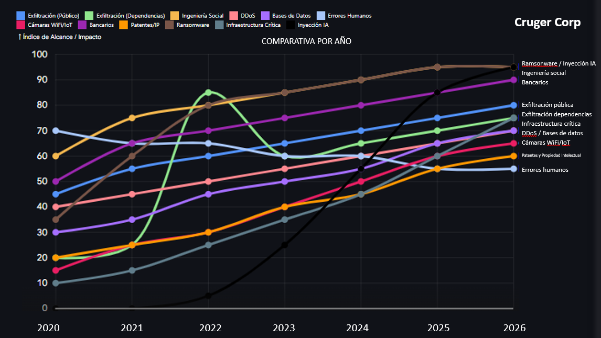

Ciberataques en México en aumento, las tendencias como respuesta sugieren falta de efectividad.
En Cruger Corp reconocemos la exigencia corporativa e institucional por mejorar y optimizar sus infraestructuras tecnológicas. Sin embargo, el modelo actual para la defensa de la información es inherentemente ineficiente. Los análisis de incidentes recientes demuestran que la adopción de tecnologías orientadas a la conveniencia operativa frecuentemente facilita la exposición de activos críticos y simplifica el trabajo de los atacantes.
Estas vulnerabilidades son empíricamente medibles: existe una correlación directa donde la probabilidad de compromiso aumenta al "modernizar" la tecnología sin la debida arquitectura de implementación.
Marco teórico:
La paradoja de la modernización, la falsa sensación de seguridad y un crudo análisis de vulnerabilidades en México. Fecha 15 de Abril de 2026 | Publicado por Cruger CorpEl actual contexto corporativo asume erróneamente que la adopción acelerada de tecnologías emergentes equivale a una evolución natural en la seguridad operativa. Sin embargo, un análisis pragmático de las infraestructuras contemporáneas revela una disonancia crítica: la modernización tecnológica, impulsada por la eficiencia administrativa y la accesibilidad comercial, genera una expansión proporcional e incontrolable de las superficies de ataque. Este fenómeno se fundamenta en la priorización sistémica de la disponibilidad de datos sobre la integridad absoluta de los sistemas.
El primer eje analítico reside en la arquitectura de centralización y la externalización de servicios. La delegación del almacenamiento y procesamiento hacia infraestructuras de terceros destruye el perímetro físico como barrera de contención y mitigación de ataques conocidos, si alguien no tiene acceso a tu red o esta es privada, se asume que todo ataque de exfiltración y explotación de vulnerabilidades no puede ser consumado, tendrían inherentemente que estar presentes lo que dificulta un ataque remoto donde la seguridad basada en el anonimato es la principal medida de contención de ataques a las cadenas de seguridad tradicional. Teóricamente, esto introduce el concepto de vulnerabilidad por convergencia, al consolidar múltiples vectores operativos en plataformas unificadas para facilitar la gestión remota, se establecen puntos únicos de fallo estructural, si la cadena de custodia digital depende de un proveedor externo cuyo modelo de negocio prioriza la interoperabilidad masiva, la probabilidad de exfiltración aumenta exponencialmente. La dependencia hacia redes omnipresentes anula los beneficios del aislamiento criptográfico, transformando la infraestructura en un ecosistema frágil ante credenciales comprometidas.
El segundo fundamento teórico aborda la hiperconectividad y el despliegue de dispositivos periféricos, la integración masiva de hardware conectado para monitoreo o automatización industrial redefine la topología de red. Desde una perspectiva analítica, cada nodo añadido sin un confinamiento riguroso actúa como un vector de escalada de privilegios. Las topologías planas permiten que un dispositivo periférico comprometido sirva como puente hacia activos críticos, la teoría de la defensa en profundidad falla cuando los protocolos de interconexión asumen la confianza por defecto dentro de la red local, demostrando que la conveniencia del despliegue rápido es inversamente proporcional a la resiliencia contra intrusiones laterales. Datos contrastados sobre fuentes de implementación critica documentada muestran que estos nodos lejos de facilitar el trabajo para los operadores diarios de la información o el acceso a sistemas que son complejos, resultan en la facilitación de ataques o explotación de vulnerabilidades. En muchos de los casos no se magnifica la escala de peligro relacionado a eso, casos donde infraestructura critica como plantas de agua, presas, centrales de energía, hidroeléctricas o centrales nucleares han dejado ver que el tema no es para tomarse a la ligera, y aun así el aumento por la interconexión aun sabiendo los riesgos deja en evidencia la indiferencia de los usuarios por su propia seguridad o el desconocimiento de los protocolos de acción de seguridad en industrias críticas. Aun así, la exposición de cámaras de seguridad de uso domestico o el acceso a datos centralizados en dispositivos de moda incluyendo aquellos integrados con IA dejan ver datos sensibles que atacantes pueden usar contra sus víctimas, incluso por actores de vigilancia gubernamental facilitando el trabajo de recopilación de información de agencias dedicadas al tema.
Finalmente, la delegación de procesos analíticos a modelos de aprendizaje automático e inteligencia artificial representa el tercer eje crítico. El pragmatismo dicta que los algoritmos automatizados son cajas negras probabilísticas, no escudos deterministas. Confiar la toma de decisiones de acceso o la detección de anomalías a sistemas susceptibles a manipulación de datos de entrada o envenenamiento de modelos introduce un riesgo existencial. Las arquitecturas que sustituyen la validación algorítmica estricta por heurística automatizada no eliminan el riesgo; simplemente lo abstraen, dejando a los administradores ciegos ante ataques asimétricos diseñados específicamente para eludir la lógica de las redes neuronales defensivas. Se han documentado casos como modelos de análisis donde los sistemas asumen correcciones para ser más eficientes (modelos con privilegios de usuario), estos cambios a veces insignificantes comprometen la estructura de operación de un proceso o de un algoritmo de ramas y arboles de procesos, legando daños a diferentes áreas muchas veces sin respaldos de información al día.
En conclusión, la teoría de la infraestructura resiliente debe abandonar definitivamente la falacia peligrosa de la hiperconectividad comercial. La seguridad efectiva no es un producto que se superpone a redes abiertas, sino una propiedad emergente del diseño arquitectónico restrictivo. Para mitigar las amenazas modernas de manera sistemática, resulta imperativo estructurar los ecosistemas digitales estrictamente bajo principios inquebrantables de compartimentación extrema y validación nula. Solo mediante el rechazo analítico de la conveniencia operativa y la adopción de esquemas de aislamiento físico riguroso será verdaderamente posible neutralizar la ventaja táctica inherente que el modelo actual otorga a los atacantes, garantizando siempre la integridad operativa en absolutamente todos los niveles críticos corporativos.
El desglose técnico sobre estos vectores y la evidencia sobre la falta de viabilidad de las soluciones convencionales empleadas por el sector corporativo, está disponible en nuestro informe completo en www.CrugerCorp.com.
A continuación, desglosamos tres vectores críticos que evidencian esta falla sistémica:
- LA ILUSIÓN DE LA NUBE Y LA CENTRALIZACIÓN DE DATOS: Una muestra clara de este fallo es la exposición de bases de datos críticas alojadas en servicios de nube (centros de datos o computadoras de terceros donde no existe el secreto como tal ante procesos o requerimientos). Diseñadas bajo la premisa de "facilitar" el acceso para optimizar procesos y hacerlos más intuitivos para perfiles no técnicos, estas implementaciones suelen carecer de un aislamiento adecuado. La conveniencia administrativa genera tráfico directo que, al no contar con controles de acceso rigurosos o segmentación por diseño, resulta en una vulnerabilidad crítica. La recurrente exfiltración de bases de datos masivas es consecuencia directa de priorizar la accesibilidad sobre el rigor criptográfico.
- PROLIFERACIÓN IOT Y RIESGOS EN CADENAS DE CUSTODIA (VIDEOVIGILANCIA): Otro vector de riesgo severo es el despliegue de hardware conectado, como cámaras de seguridad de red o inalámbricas. La promesa de una instalación rápida y gestión remota oculta un riesgo estructural profundo: al no implementar redes aisladas (VLANs restrictivas supervisadas y aún en esos casos), estos dispositivos se convierten en puentes de acceso. La centralización de su control en paneles externos vulnerables permite a terceros no autorizados el secuestro de infraestructuras enteras, demostrando el riesgo de depender de plataformas de gestión de terceros sin validación interna.
- LA DELEGACIÓN DE LA RESILIENCIA A LA INTELIGENCIA ARTIFICIAL: De manera alarmante, observamos una tendencia corporativa a delegar la toma de decisiones y la protección de datos a herramientas de automatización e Inteligencia Artificial. Asumir que las soluciones "de tendencia" garantizan protección es un error de cálculo. Las infraestructuras que confían su lógica de seguridad a modelos de lenguaje o chatbots están abriendo vectores de explotación altamente sofisticados, como la manipulación de flujos de datos (prompt injection) y el secuestro de funciones automatizadas. Depender de la IA para la gestión de acceso no elimina la vulnerabilidad; simplemente la traslada a un sistema de caja negra que la empresa no controla, no entiende o no puede intervenir de manera directa.
EL ENFOQUE BASADO EN DATOS: Podríamos continuar enumerando las brechas que diariamente saturan los medios, pero no somos un portal de divulgación; somos una Firma Tecnológica. Por ello, utilizamos la evaluación de vectores y análisis de datos para predecir tendencias y estimar riesgos basado en la implementación, esto recabado de múltiples incidentes en el sector para generar inteligencia accionable. Extraemos el ruido mediático para enfocarnos en las estadísticas de vectores y fallos de implementación. Los números son verificables: los incidentes no son producto de atacantes invisibles, sino de arquitecturas deficientes o la falta de entendimiento sobre contratos muchas veces más caros que los problemas que supuestamente se resuelven y que terminan en la exposición de datos y daños elevados de sus contratantes.
La falta de efectividad en materia de ciberseguridad sugiere directamente que los modelos comerciales no están cubriendo la base principal del diseño seguro. Estas soluciones empaquetadas, lejos de prevenir, actúan como un gasto inflacionario para las empresas, generando una falsa sensación de protección, pero nula efectividad en el bloqueo del canal de ataque, situación verificable ante el creciente aumento de incidentes en sectores que deberían ser seguros, que se ve efectivo cuando surgen las evidencias del daño ocasionado.

Se han procesado las tendencias estimadas de incidentes, alcance y severidad desde 2020 hasta el primer trimestre de 2026, consolidándolas en un Índice de alcance e impacto relativo (0 - 100). Es la única forma analítica de graficar en la misma escala la exfiltración masiva de datos (que ocurre por millones) y los ataques a infraestructura crítica (que son menos en volumen, pero de impacto devastador) dentro de un gráfico de ejemplo comprensible sin ser técnico.
El Índice de alcance e impacto relativo (escala de 0 a 100) es una métrica compuesta diseñada exactamente para resolver este problema: permite ponderar y graficar vectores de ataque dispares bajo un mismo estándar de riesgo macroeconómico y de seguridad.
El índice representa el nivel de severidad integral de un vector de ataque en un año determinado. ¿Cómo se mide? (Desglose de Variables) Para llegar al valor de 0 a 100, el índice evalúa dos dimensiones principales. En el análisis de riesgos moderno (basado en metodologías como FAIR o CVSS adaptado a nivel macro), el impacto suele tener un peso ligeramente mayor que el alcance.
1. ALCANCE (FRECUENCIA Y DISPERSIÓN) - PESO SUGERIDO: 40%
Esta variable mide la huella del vector de ataque. Se evalúa del 0 al 100 basándose en:
- Volumen de incidentes: ¿Hablamos de decenas de ataques dirigidos (APT) o de millones de intentos automatizados?
- Tasa de propagación: La velocidad a la que el ataque puede replicarse de una red a otra sin intervención humana (como los gusanos en el ransomware).
- Accesibilidad de la herramienta: ¿Requiere el atacante conocimientos avanzados (alta barrera de entrada) o es un ataque que se puede comprar como servicio en la dark web (Ransomware-as-a-Service, DDoS-as-a-Service)?
2. IMPACTO (DAÑO TANGIBLE E INTANGIBLE) - PESO SUGERIDO: 60%
Esta es la variable crítica que eleva vectores como el secuestro de infraestructura a la cima del gráfico, a pesar de su menor frecuencia. Se evalúa del 0 al 100 basándose en:
- Impacto Operacional (Downtime): Tiempo en el que la organización o servicio queda paralizado.
- Pérdida Financiera: Costos directos (rescates pagados, dinero robado) e indirectos (pérdida de contratos, multas regulatorias, honorarios legales).
- Sensibilidad de los Datos: Exfiltración de credenciales básicas vs. robo de propiedad intelectual (patentes) o historiales médicos confidenciales.
- Daño Físico / Seguridad Nacional: Este es el multiplicador máximo. Si el ataque compromete vidas humanas (ej. alteración de sistemas en hospitales, redes eléctricas o vehículos autónomos), el puntaje de impacto se dispara automáticamente al percentil más alto.
EJEMPLO DE APLICACIÓN PRÁCTICA
Caso A: Ataques de Ingeniería Social (Phishing común)
- Alcance: 95/100 (Masivo, ocurre millones de veces al día, herramientas baratas).
- Impacto: 30/100 (El usuario individual pierde el acceso a una cuenta o fondos limitados; rara vez paraliza a una empresa entera por sí solo).
- Índice Final: Alto en la gráfica, pero estabilizado, impulsado puramente por su volumen.
Caso B: Ransomware a Infraestructura Crítica (ej. Planta eléctrica)
- Alcance: 15/100 (Pocos incidentes al año, requiere actores patrocinados por estados o grupos cibercriminales de élite).
- Impacto: 100/100 (Paralización de ciudades, riesgo de pérdida de vidas, impacto económico a nivel estatal).
- Índice Final: Escala rápidamente en la gráfica debido al daño catastrófico, superando a los ataques masivos en prioridad de mitigación.
Notas clave:
La Divergencia de la Exfiltración: Se observa que la exfiltración de datos al público promedio crece de manera constante, pero la enfocada en dependencias tuvo un comportamiento volátil (con una vertiente en pico en 2022). Esto demuestra que los atacantes gubernamentales/hacktivistas actúan por campañas de oportunidad y vulnerabilidades zero-day, mientras que el cibercrimen considerado como tradicional o común opera como un negocio continuo.
- El Factor Humano: Es el único vector que se mantiene constante o con una ligera tendencia a la baja. A medida que las empresas invierten millones en software de seguridad, el "eslabón más débil" sigue siendo el empleado que cae en una suplantación de identidad o comete un error de configuración en la nube. Así mismo el reflejo de las dependencias de usuario enfocadas en Ingeniería social reflejan un punto en este vector.
- El nuevo paradigma (IA): El vector de inyección de código a chatbots y modelos de IA ha pasado de ser un riesgo teórico en 2022 a una de las amenazas de más rápido crecimiento en 2025 y principios de 2026. Los atacantes están logrando que las IAs corporativas revelen datos sensibles de clientes simplemente mediante ingeniería de prompts.
- Infraestructura Crítica: Aunque su volumen total es menor comparado con ataques bancarios, el impacto es asimétrico. Los ataques a redes eléctricas o sistemas hospitalarios han dejado de ser exclusivos de actores estatales y ahora son utilizados por grupos de ransomware buscando pagos millonarios bajo la amenaza de daño en el mundo real.
El análisis de los vectores nos muestra de manera clara una única respuesta, lejos de solucionarse con tendencias del mercado e implementación de procesos "seguros" basados en la moda de empresas de etiqueta blanca, revendedores de servicios o novedad de desarrollo como los "modelos de IA", la tendencia muestra un aumento significativo en todos los canales de análisis para la muestra. Del mismo modo que la tendencia por la innovación alcanza a las PyMEs tradicionales, corporativos, dependencias y unidades seguras, lo hace para los que buscan el punto vulnerable de infraestructura, y no precisan de los modelos más avanzados de cómputo, sino de la indiferencia de los usuarios por arreglar el problema de raíz por la comodidad de emplear modelos automatizados o simplificados con la esperanza de que eso funcione como barrera de contención.
En cuanto a los modelos de análisis críticos, sobre infraestructura de seguridad nacional, el margen de datos es gris, debido a la opacidad con la que se manejan esos datos fuera de las esferas donde se comparte la información y donde los medios especializados obtienen cifras que muchas veces son maquilladas por otros para evitar confrontación de contraste con la realidad en materia del alcance de perdida, ya sea de análisis de exposición, de vulnerabilidad, de perdida de vidas o donde la seguridad de una infraestructura se ve comprometida por falta de medidas de seguridad lo que seria visto como una ineficiencia. Lo que es seguro es que una exfiltración de datos es un tema serio, ya que, para firmas, corporativos, fideicomisos, dependencias o industrias puede representar la perdida de contratos, exposición de material sensible, datos que ponen en peligro la vida o costos millonarios o irreparables por perdida de inversión.
El Costo Real de la "Moda Tecnológica" y el Colapso de la Cadena de Confianza
La adopción impulsiva de tecnologías bajo la premisa de la innovación ha creado un ecosistema global que prioriza la velocidad sobre la integridad. Este fenómeno no es exclusivo de un país; es una pandemia tecnocrática donde se confía ciegamente en infraestructuras y dispositivos cuya arquitectura subyacente es un misterio para quienes los operan. Esta "moda rápida" tecnológica tiene un costo financiero devastador. Tema que abordamos en otro de nuestros análisis sobre mercado y tendencias que están impulsados más por agendas que por la innovación y que responden a intereses no declarados al público.
Al remover el impacto mediático, los datos puros revelan que el daño económico no proviene de multas regulatorias, sino de la paralización operativa y la pérdida de activos críticos:
- El impacto financiero global: De acuerdo con los informes de la industria (como el costo de exposición), el costo promedio global de una filtración de datos supera los 4.4 millones de dólares por incidente. En el contexto nacional, el Instituto Nacional de Estadística y Geografía (INEGI) reporta consistentemente que los ciberataques son una de las principales causas de pérdidas económicas en el sector corporativo, no solo por el robo de información, sino por la interrupción prolongada de las operaciones y la fuga de capital de inversión por desconfianza.
- La vulnerabilidad en la cadena de suministro (El caso Android): La confianza ciega en el hardware de consumo ha introducido caballos de Troya directamente en redes corporativas y domésticas. El descubrimiento reciente de operaciones como "Badbox" evidenció que millones de cajas de streaming (Android TV boxes) de bajo costo fueron distribuidas a nivel global con malware integrado desde su fabricación en Asia. Estos dispositivos, conectados a redes corporativas por empleados buscando conveniencia, operaban como nodos de una red criminal (botnet) antes de salir de su empaque, burlando cualquier firewall perimetral tradicional.
- La ilusión de las redes herméticas (Ataques físicos a infraestructura): La creencia de que desconectar un sistema de la red pública garantiza su seguridad es una negligencia comprobada. El histórico ataque Stuxnet a la planta de enriquecimiento nuclear en Natanz destruyó físicamente las centrifugadoras de la instalación alterando la lógica de los controladores industriales (PLCs), todo mientras los sistemas de monitoreo reportaban normalidad. La planta era completamente hermética (aislada de internet), pero falló por carecer de políticas de validación nula en sus procesos internos.
- El colapso del IoT (Cámaras IP y vectores de entrada): La hiperconectividad de dispositivos de bajo perfil técnico ha escalado exponencialmente las superficies de ataque. La explotación de vulnerabilidades en cámaras de seguridad IP inalámbricas (mediante el secuestro de credenciales o la inyección de comandos) ha permitido a los atacantes no solo el espionaje corporativo, sino utilizar estos dispositivos como plataformas de lanzamiento para ataques masivos (como botnets tipo Mirai) que paralizan servicios críticos a nivel global.
La Solución Arquitectónica de Cruger Corp
El análisis de estos vectores nos lleva a una conclusión incontrovertible: las soluciones comerciales convencionales, basadas en reaccionar ante la amenaza una vez que está dentro de la red, han fracasado. Operan como un gasto inflacionario que otorga una falsa sensación de protección mientras los costos por filtraciones siguen rompiendo récords históricos año con año.
En Cruger Corp, determinamos que la única defensa viable contra la explotación de esta infraestructura hiperconectada es el rechazo absoluto de la confianza por defecto. La verdadera resiliencia no se compra en un software de monitoreo, se construye desde la base del diseño de la red. Mediante la implementación de arquitecturas de Confianza Cero (Zero Trust), compartimentación extrema y segmentación física y lógica, garantizamos que el compromiso de un nodo periférico, un dispositivo IoT comprometido de fábrica o un error humano, jamás se traduzca en una escalada de privilegios hacia los datos vitales de la organización.
Protegemos el núcleo del negocio no sumando capas de herramientas ineficientes, sino restando matemáticamente la posibilidad de que el atacante pueda moverse dentro de la red.
CITAS Y REFERENCIAS:
Wikipedia La enciclopedia libre (2025). Stuxnet. Recuperado el 05 de Abril de 2026. De Wikipedia, La enciclopedia libre. Website: https://es.wikipedia.org/wiki/Stuxnet
Harán, Juan Manuel (2023). Android TV Box comprado en Amazon venía con malware precargado (Investigación sobre el hallazgo de Daniel Milisic y el troyano Triada). Recuperado el 05 de Abril de 2026. De WeLiveSecurity (ESET Latinoamérica). https://www.welivesecurity.com/la-es/2023/01/16/android-tv-box-comprado-amazon-con-malware/
Banco de México (Banxico). (2018). Reporte de análisis forense sobre la vulneración al SPEI y acciones correctivas. Recuperado el 06 de Abril de 2026. De Banxico Oficial. Website: https://www.banxico.org.mx/spei/d/%7B4A977A24-0889-3F24-A717-DF9DBBA118C1%7D.pdf
Yahoo Noticias (2025). Fiscalía de Guanajuato investiga presunto ciberataque a sus archivos (Caso Tekir APT). Recuperado el 07 de Abril de 2026. De Yahoo Noticias. Website: https://es-us.noticias.yahoo.com/fiscal%C3%ADa-quanajuato-investiga-presunto-ciberataque-160710749.html
Cruge, Angel (2026). DARK ZONE – METODOLOGÍA DE INTELIGENCIA VOLUMEN I VULNERABILIDADES SISTÉMICAS Y UN NUEVO PARADIGMA DE LA SOBERANÍA DIGITAL BASADA EN HARDWARE. Recuperado el 14 de Abril de 2026. De Cruger Corp / Zenodo. Website: https://zenodo.org/doi/10.5281/zenodo.18415821
ANMTV (12/04/2026). Avatar - La Leyenda de Aang: filtran un fragmento de la película. Recuperado el 12/04/2026. Website: https://www.anmtvla.com/2026/04/avatar-la-leyenda-de-aang-filtrar-un.html
Avatar Wiki (12/04/2026). Acaban de filtrar escenas de la película animada del Avatar Aang. Recuperado el 12/04/2026. Website: https://www.facebook.com/avatarwikies/posts/acaban-de-filtrar-escenas-de-la-pel%C3%ADcula-animada-del-avatar-aang-esto-no-es-un-s/953374927049374/
Reportes de la Industria (12/04/2026). Filtración de Paramount: Usuario amenaza con filtrar película completa de Avatar Aang tras recibirla por error. Información en desarrollo en redes sociales y medios especializados.
Gomez Villaseñor, Ignacio (2026). Hackean a empresa de ciberseguridad mexicana: espían sus cámaras EN TIEMPO REAL. Recuperado el 15 de Abril de 2026. De Facebook verificado - Ignacio Gómez Villaseñor. Website: https://www.facebook.com/igvillasenor/posts/-hackean-a-empresa-de-ciberseguridad-mexicana-esp%C3%ADan-sus-c%C3%A1maras-en-tiempo-realu/122146253739134256/
Gomez Villaseñor, Ignacio (2026). CREAN BOT PARA ACCEDER A BASE DE SISTEMA QUE DEBÍA PROTEGER LA MARINA. Recuperado el 13 de Abril de 2026. De Facebook verificado - Ignacio Gómez Villaseñor. Website: https://www.facebook.com/igvillasenor/posts/%EF%B8%8F-crean-bot-para-acceder-a-base-de-sistema-que-deb%C3%ADa-proteger-la-marinalos-datos/122145086127134256/
Rodriguez, Juan Carlos (2026). ASIPONA - Hackeo masivo a Marina expone datos de 640 mil trabajadores portuarios. Recuperado el 13 de Abril de 2026. De El Sol de México. Website: https://oem.com.mx/elsoldemexico/mexico/hackeo-masivo-a-marina-expone-datos-de-640-mil-trabajadores-portuarios-29352940